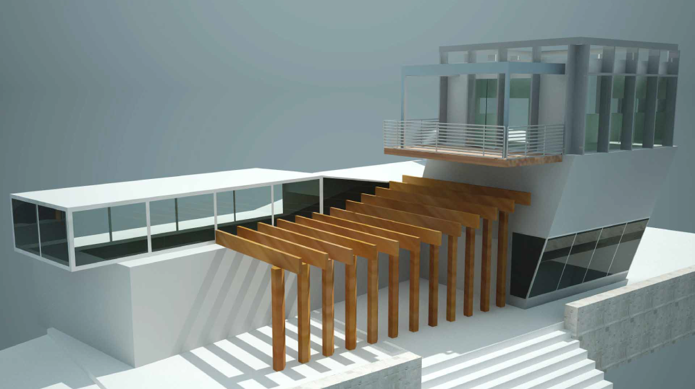
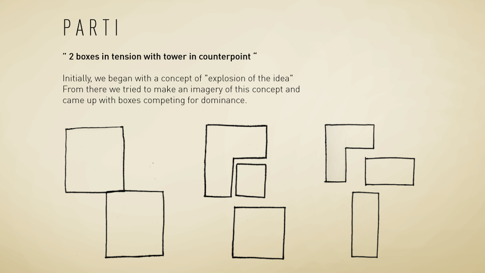
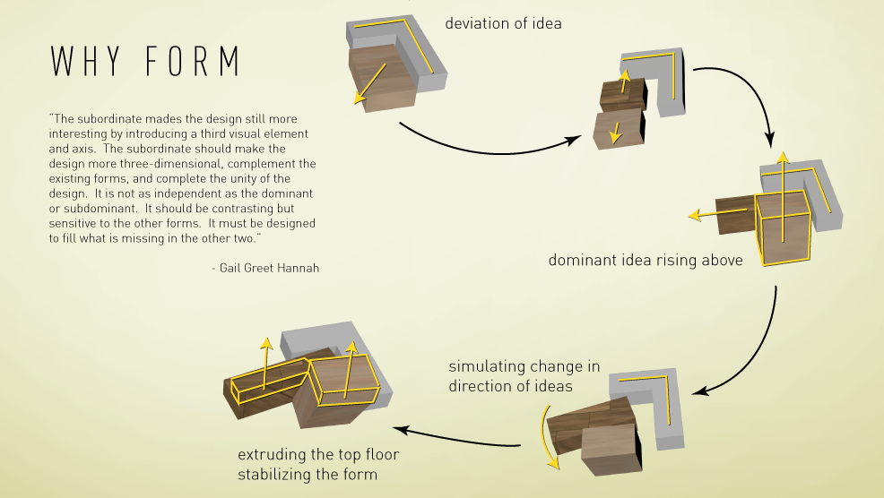
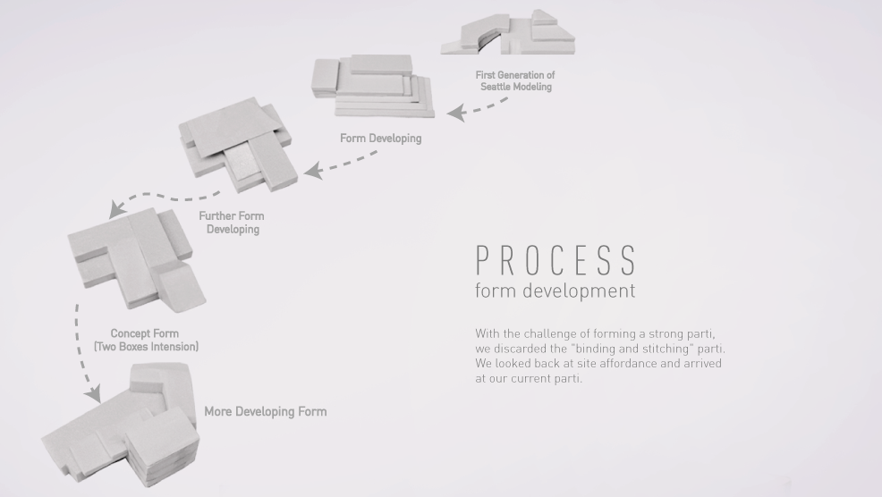
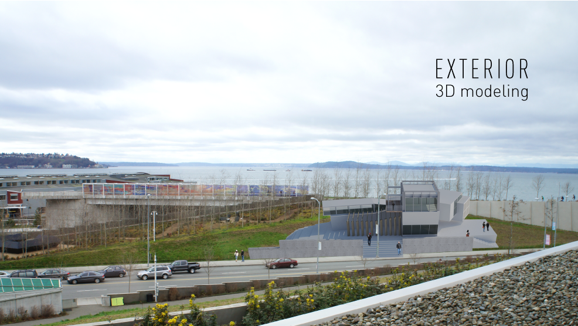
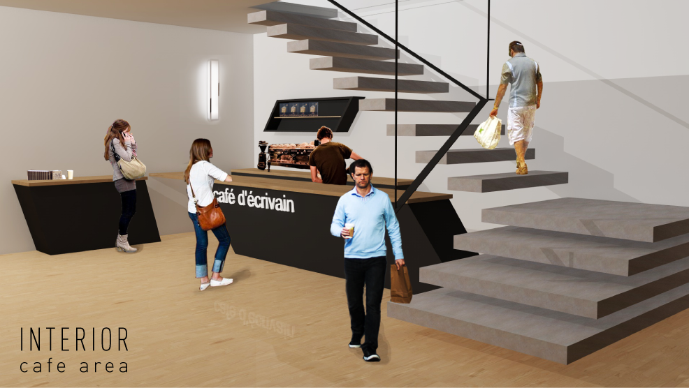

Type
Spatial design
Role
Project Manager
Prototyping
Texturing
Lighting
Post-Production
Tools


Team
Soojin Lee
Yan Yao Li
Mae Lim
Bruce Lui
Yee Loong Ooi
Award
2012 Seattle Design Charette Runner up

Objective
Select a site found at the Olympic Sculpture Park in Seattle to design a building for writers to conduct their work with effective space.
Process
Prior to the design, precedent studies were researched to understand other architects’ tactics in successful spatial design. Then, the team visited and researched the sites available by experiencing the environment and documenting the space using photography, video and written notes. Eventually, the team decided to take on the challenge to design a space next to the highway. We first began brainstorming negative and positive components in order to generate various conceptual forms. Once the idea was formed, a proposal was created using 3D modelling, sketches, photography and a physical conceptual model to explain our approach. Afterwards, more iterations were conducted to elaborate and strengthen the ideas which resolved to the Parti and forms as seen below. Within the team, my contributions involved applying texture and lighting to the exterior rending of the building, making physical prototype using foam to capture the concept of the building, as well as conducting post-production to enhance a realistic environment.
- 
- 
- 
Result
With the challenge in choosing a site that consisted sound issues from the highway, the building was moved back and the slanted windows were implemented to deflect loud noises in order to offer writers a peaceful area to work in, while looking over the sea. By constantly using 3D rendering tools and post-production as seen in the 2 images below, I have quickly grasp the softwares used to produce believable outcomes to impress clients.
- 
- 